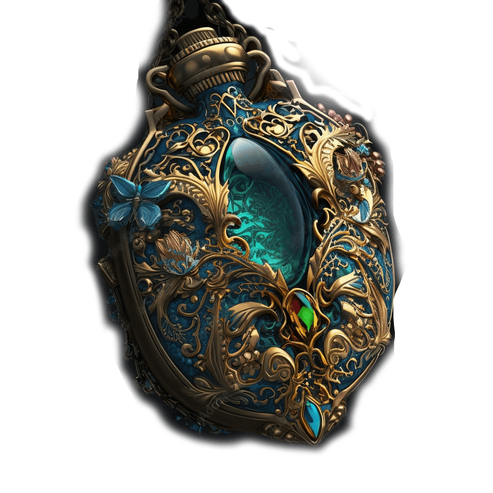
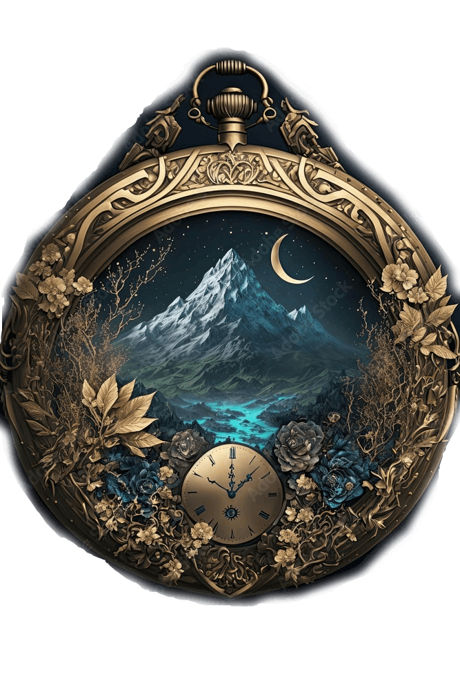
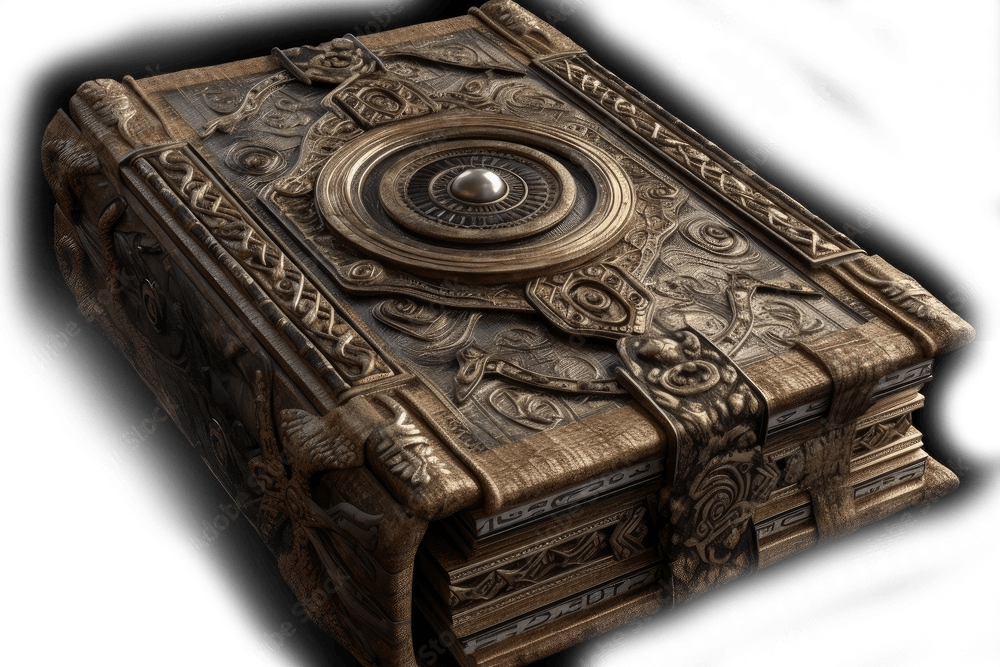
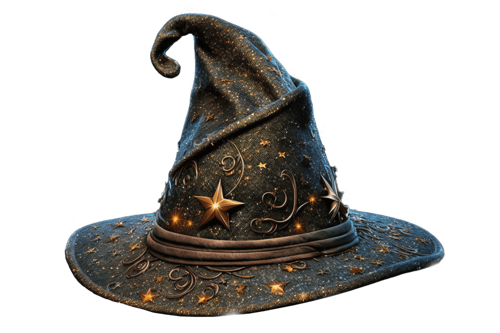
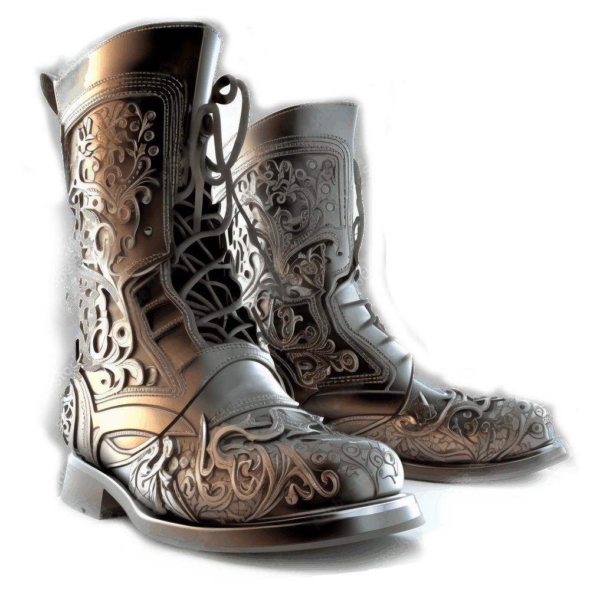
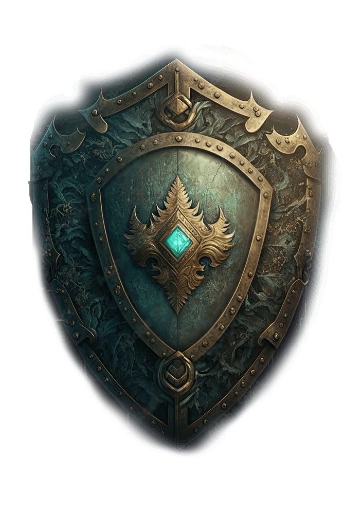
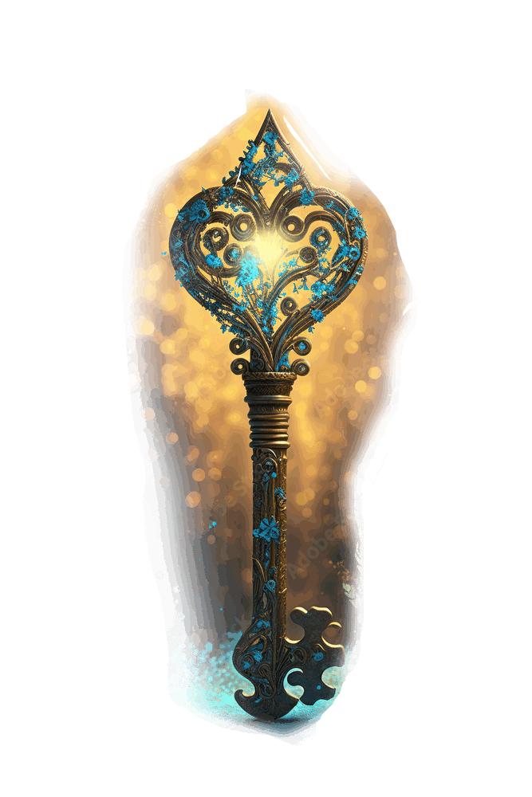
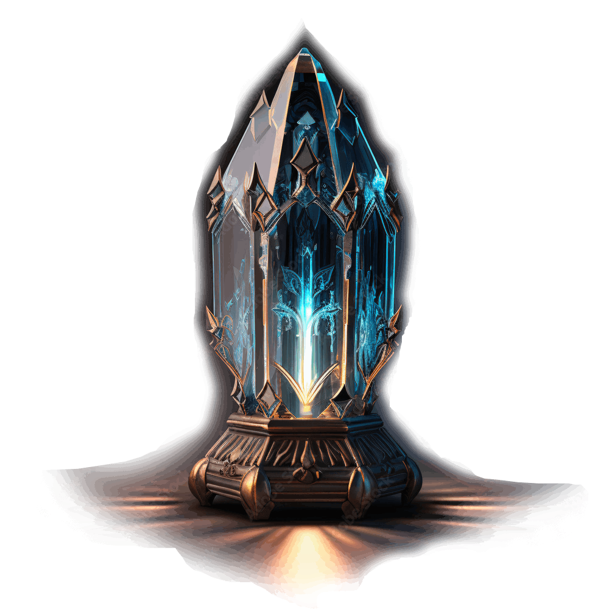
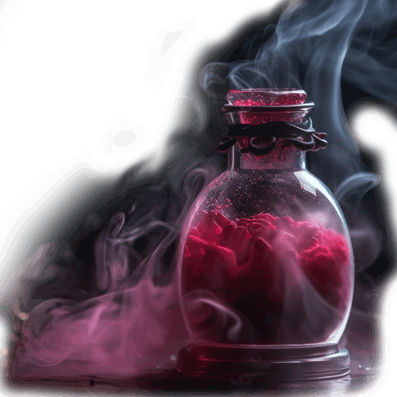
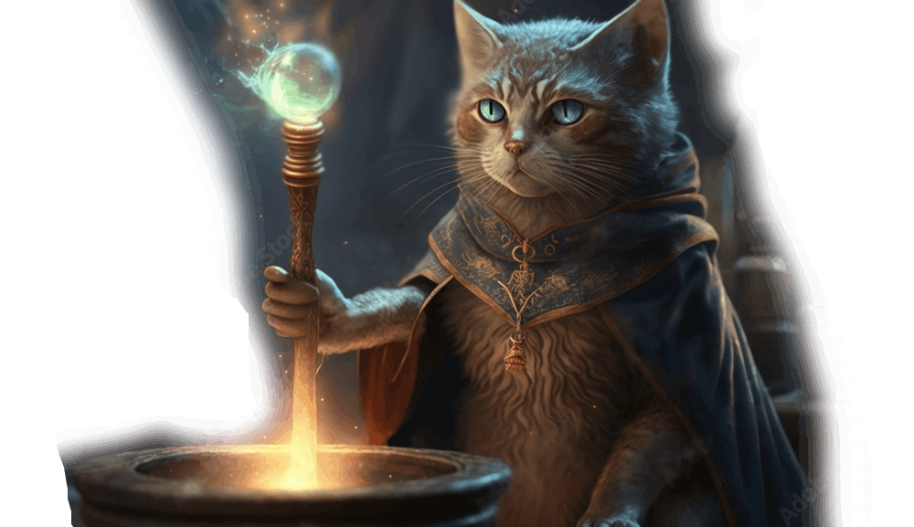

"arkan hall of wonders"
Музей волшебства
Архитектура музея отражает очарование и мистику магических искусств. Замысловатые конструкции, скрытые проходы и захватывающие экспонаты переносят посетителей в царство, где обычное уступает место необычному. Экспонаты в Тайном зале чудес демонстрируют эволюцию магии на протяжении всей истории. От древних цивилизаций и их мистических традиций до средневековой эпохи алхимии и колдовства коллекция музея охватывает разные культуры и периоды времени. Посетители музея могут полюбоваться книгами заклинаний, написанными известными колдунами, стать свидетелями артефактов, наполненных древними чарами, и даже принять участие в интерактивных выставках, которые позволяют им испытать магию на собственном опыте.
Экспонаты
Амулет
Этот амулет является одним из самых древних экспонатов в музее волшебства. Он сделан из драгоценных камней и украшен символами магических сил. По преданию, он имел способность находить скрытые сокровища и открывать тайные пути. Его происхождение остается загадкой.
Секундомер
Этот секундомер, выгравированный на самородке кристалла, использовался волшебниками для измерения времени в магических ритуалах. История этого секундомера связана с тем, что он был использован для создания мощных заклинаний и предсказаний.
Книга заклинаний
Эта книга, покрытая таинственными символами и наполненная секретами волшебства, служила главным источником знаний для волшебников. Ее история берет свое начало с самого рождения магии и продолжается до наших дней.
Магическая шляпа
История этой шляпы связана с выдающимися магами, которые использовали ее при изучении и применении магических знаний. Магическая шляпа, украшенная звездами, обладает способностью придавать своему владельцу силу и мудрость.
Сапоги-скороходы
Эти волшебные сапоги были изготовлены из эластичной кожи и обладали способностью придавать своему владельцу невероятную скорость и ловкость. Их история связана с волшебными путешествиями и поисками сокровищ.
Магический щит
Щит, сделанный из драгоценных металлов и украшенный символами защиты, служил волшебникам для защиты от врагов и обладал способностью отражать магические атаки. Этот исторический экспонат связан с легендами о могущественных битвах и героических подвигах волшебников.
Магический ключ
Волшебный ключ, который способен открывать самые запретные двери и сейфы. Его история связана с поисками и приключениями волшебников, которые использовали его для доступа к запретным источникам магической энергии.
Кристалл Исцеления
Этот кристал считается одним из самых редких в мире и может восстанавливать здоровье и энергию, а также придавать силу владельцу. Его история наполнена мифами о загадочных исцеляющих способностях и чудодейственных силах.
Зелье Могучести
Это зелье обладает уникальным свойством - оно способно временно усилить любые способности волшебника, делая его сильнее и мощнее. История зелья Могучести восходит к древним временам, когда маги исследовали возможности алхимии и эльиксиров. Это зелье было создано одним из великих магов, который провел долгие годы в исследованиях и экспериментах. Он стремился создать революционное зелье, которое помогло бы волшебникам достичь высочайших высот в их силе и способностях.
Таковыми являются экспонаты в музее волшебства. Разнообразие предметов погружает посетителей в удивительный мир волшебства и воображения. Экскуркию для вас проведет знаменитый маг и волшебник - Кот Ученый
